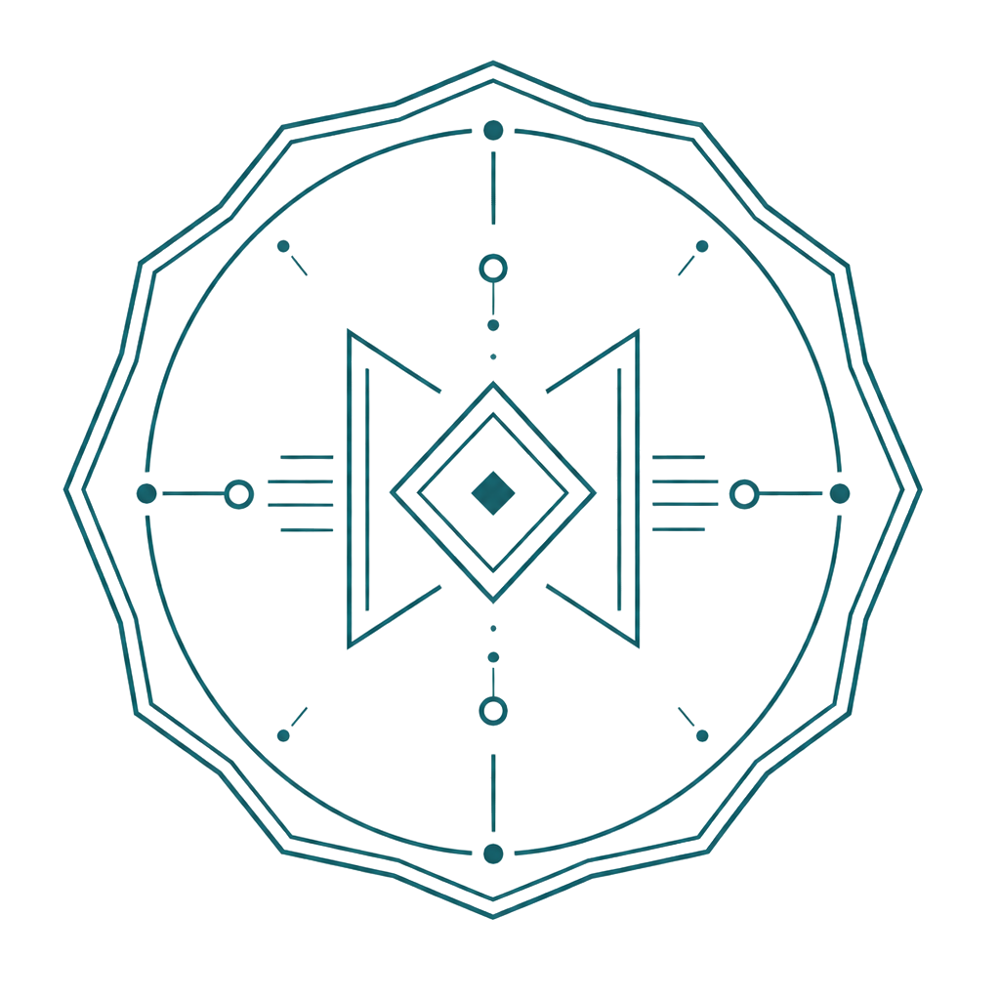

Project Template
In ProgressA reusable card layout for future portfolio projects

Archive Entry / Developer Profile
Creative technical builder / systems-minded software engineering student
Tools, systems, interactive projects, games, and software that organizes complex ideas
What I'm actively working on right now.
I'm currently refining the visual direction of this portfolio, documenting project work, and preparing space for case studies.
I'm interested in software that organizes complexity and gives ideas a usable shape. My work tends to orbit around tools, systems, and interactive projects.
Utilities, generators, trackers, and workflow-focused applications that help turn scattered ideas into something practical.
Structured logic, data models, rules, mechanics, and state-driven behavior that make software easier to understand, extend, and use.
Game-adjacent projects, prototypes, and creative systems where software supports stories, worldbuilding, and player interaction.
I'm building my foundation around C#, software design, web fundamentals, and game-adjacent development.
C#, JavaScript, HTML, CSS, SQL, Python
.NET, ASP.NET Core, Git, Github, Visual Studio, VS Code, Spyder
Godot 4, C#, gameplay prototypes, UI systems
React, TypeScript, Entity Framework Core, API design, unit testing
Selected projects will be added here as they are completed and documented.
A reusable card layout for future portfolio projects
A few principles that shape how I approach software projects.
I try to build projects in a way that forces me to understand the decisions behind the code, not just the final result. AI can be useful for planning, review, and debugging, but I want the implementation work to reflect what I can actually explain.
I like starting with the structure of a project: what data exists, how pieces connect, what the user needs to do, and what the smallest working version should be. Polish matters, but only after the core system has a clear shape.
I try to keep early versions focused. A smaller project that works, teaches something, and can be improved is more valuable than a large idea that never becomes usable.
I'm a Software Engineering student focused on building practical tools, structured systems, and interactive projects. I'm especially drawn to C#, software design, web fundamentals, and game-adjacent development.
A lot of what I build comes from the same interests that keep me curious outside of code: games, mythology, stories, and systems that turn scattered ideas into something usable. I enjoy projects where logic, structure, and creativity meet.
Before pursuing software engineering, I worked as a Weather Forecaster in the Air Force, which gave me experience thinking through data, patterns, uncertainty, and clear communication. Today, I'm applying that same systems-focused mindset to software development.